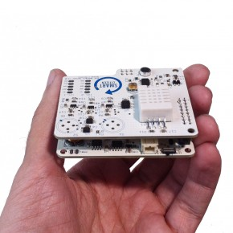

The first step to use and configure a SCK is getting the Arduino IDE, which is nothing more than the program you use to upload a program (also called sketch) to an Arduino board. You can download the appropiate binaries for your operating system from the official website of Arduino, or, if you like bleeding-edge technology you can compile it from source by downloading the latest version of the code in Google Code (instructions on how to compile source can be found here). Install drivers if necessary and get the system up and running, as described in the official website (choose your OS). The SCK core is a modified Arduino Leonardo, thus you have to select it in the Arduino IDE as follows: Tools>>Board>>Arduino Leonardo. Now you should be able to run the application and get a similar window to this following one:
The board already comes with a stable version of the firmware. You can skip this step if you want.
However, ff you want the bleeding-edge version (unconfigured) of the firmware then you shall grab it from our repository in GitHub. There are two ways to do this:
- Press the button that says ZIP in GitHub so you can download a zipped version of the entire repository.
- If you have Git installed in your machine you can just type the following in your terminal: git clone git://github.com/fablabbcn/Smart-Citizen-Kit.git
Next open the main file, Sck_*.ino, with the previously downloaded IDE and press CTRL+U, which will upload the program to the board.
If you downloaded the latest version of our firmware or stayed with the default one now the board knows what to do but it also has to be able to upload all gathered information to the Internet, thus you need to configure your network. You can easily do this inside the very own platform. Enter the appropriate section and select the ESSID, its password, the encryption scheme it uses (WEP, WPA or WPA2) and the kind of antenna the SCK will be using. The applet will do the rest for you.
There is also another option, which is using our cross-platform standalone Processing application. From there, you can select the appropriate vales and the program will upload them automatically to the board.
On the other hand, you can browse the code and "hardcode" all these values in the config file, named ConfigDefault.ino.
Head to the Smart Citizen website, create an account and register your SCK along with its unique ID (MAC address). You're ready to go now. And remember, sharing is caring.
